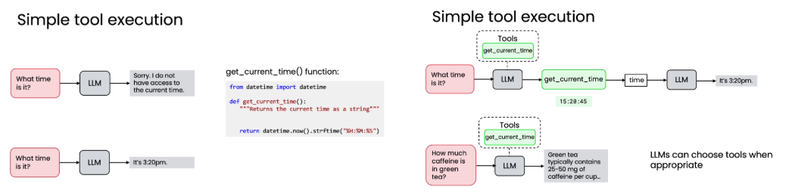

A tool is a function exposed to the model
The model receives descriptions of available tools and decides whether one is relevant. It produces a structured request containing a tool name and arguments. The application—not the language model—runs the function.

{kind=link}
Tools extend a workflow with current data, database access, calculations, search, email, calendars, and other operations represented by code.
A tool call is a request across a capability boundary
The model does not run get_current_time, search the inbox, or send a message. It emits a structured request; application code resolves the name, validates arguments, invokes the function, and returns the result as a new message.
This distinction is the core security and debugging boundary of tool use. The model can only choose among the capabilities described to it. The application owns the registry of executable functions. The tool owns its interaction with a service. The message history owns the evidence that connects one model turn to the next.
In the simple time example, the first model turn receives a question and a tool description. It returns a call for get_current_time. The application executes the Python function, appends a tool-role message containing the time, and calls the model again. Only the second model turn has the observed value needed to write “It is 8am.” For a stable question that does not need the tool, the model can answer directly.
Tool-using application
C4-style · system context
External person
User requestNatural-language goalModel
Tool selectorReturns final text or name + argumentsApplication
Tool dispatcherResolves, validates, calls, and recordsPython capability
Registered functionOne responsibility and explicit parametersExternal state
Clock, API, inbox, fileRead or changed by the toolConversation state
Tool result messageCorrelated to the original call IDModel
Continue or finishUses observed result as contextThe tool-use loop alternates model decisions and execution
- 01RequestUser states the task
- 02Select + bindModel names a tool and arguments
- 03ExecuteApplication runs the function
- 04Return resultOutput joins the history
- 05Answer / continueModel responds or requests another tool
A returned value can supply the context or argument needed by the next tool call.
The schema tells the model how to request the function
The first lab shows both automatic and manual tool handling with AISuite. A Python function and its docstring can be converted into a schema; the manual version makes the contract visible.
Name
Identifies the function that application code can execute.
Description
Explains what the tool does so the model can decide when it fits.
Parameters
Describe required arguments, types, and useful details such as a timezone format.
Turn limit
max_turns bounds the automatic tool exchange in the AISuite lab.
- AutoPass the function in
tools. AISuite creates the description, manages calls, executes locally, and feeds results back. - ManualWrite the schema yourself. Inspect
tool_calls, parse arguments, run the function, append the tool result, then ask the model to continue.
The runner is a loop over messages and tool requests
AISuite can derive schemas from Python functions and manage several turns automatically. The manual notebook path reveals the same mechanics in ordinary Python-like control flow.
def run_tool_agent(user_request, model, registry, max_turns):
messages = [{"role": "user",
"content": build_prompt(user_request)}]
for turn in range(max_turns):
response = model(messages=messages,
tools=schemas_for(registry))
if response.final_text:
return {"answer": response.final_text,
"messages": messages}
for call in response.tool_calls:
tool = registry[call.name]
args = parse_json(call.arguments)
result = tool(**args)
messages.append(response.assistant_message)
messages.append({
"role": "tool",
"tool_call_id": call.id,
"content": compact_json(result),
})
return {"error": "turn_limit_reached",
"messages": messages}Tool function
A normal Python callable such as get_current_time(), search_emails(query), or send_email(...).
- Reads
- Only its named arguments and service
- Mutates
- Only when the action is state-changing
- Returns
- Compact, consistent data for the next turn
Tool schema
The model-facing description containing function name, purpose, parameter names, types, and descriptions.
- Created by
- Library introspection or application code
- Read by
- The model
- Returns
- A constrained action vocabulary
Dispatcher
Maps a requested name to an approved callable, parses arguments, and constructs the tool result message.
- Called by
- The orchestration loop
- Mutates
- Conversation history and whatever the chosen tool explicitly owns
- Returns
- Correlated tool evidence
Agent loop
Alternates model turns and dispatch until final text, a defined error, or the turn limit.
- Owns
- Control flow and stop condition
- Reads
- Messages, schemas, registry
- Returns
- Answer plus trace
Failure modes are contract failures
delete_email is not in the registered list, so deletion cannot occur.
Change the registry, not the prose.
Two tools sound interchangeable or a parameter format is unclear.
Tighten names, docstrings, and schema details.
The call names a real tool but sends malformed JSON or an invalid identifier.
Validate before invocation and return the error.
The result is appended without the matching tool-call ID.
Preserve the request/result pair in history.
The model repeatedly requests tools and never reaches final text.
Use a turn limit and explicit terminal result.
Generated Python executes with broader access than the task requires.
Use the sandbox boundary taught in the lesson.
Multiple tools turn one request into an ordered workflow
The functions lab expands from current time to weather lookup, text-file writing, and QR-code generation. The model selects among the available tools and infers arguments from the prompt. When one result is needed by another call, it orders the calls by dependency.
In the email lab, the workflow searches for unread messages from the boss, marks them as read, and sends a reply. A separate experiment removes delete_email from the registered list: the model can discuss deletion but cannot perform it until that tool is made available.
The email trace proves which tools actually ran
User request
“Check for unread emails from boss@email.com, mark them as read, and send a polite follow-up.”
| Turn | Model request | Application action | State effect | Artifact returned |
|---|---|---|---|---|
| 01 | search_unread_from_sender("boss@email.com") | Dispatcher calls the search wrapper over the simulated email service | Read-only | Matching unread message IDs and contents |
| 02 | mark_email_as_read(id) | Dispatcher calls the PATCH-backed tool for each selected message | Inbox read flag changes | Compact confirmation for each ID |
| 03 | send_email(...) | Dispatcher binds recipient, subject, and body from the request and prior messages | New simulated email record | Sent-message ID or confirmation |
| 04 | Final text | Runner stops and returns the response plus message history | No additional effect | Concise summary of search, mark, and send actions |
The same natural-language request can fail in distinct ways. No unread email is a normal tool result. A missing mark_email_as_read function is a capability gap. A service exception is an execution failure. A final message that claims a send without a matching tool result is a trace inconsistency. Keeping the call/result history lets the application distinguish them.
What tool libraries hide
Becomes a model-visible name, description, and parameter schema.
Tool registration
Executes the requested capability in application code.
Tool dispatcher
Carry identifiers, arguments, outputs, and conversation state.
Agent state / run history
Controls continuation and termination.
Agent runner
Try it in code
- Write a zero-argument tool with a precise docstring and inspect its derived schema.
- Add one string parameter and verify its type and description in the schema.
- Handle a tool call manually: parse arguments, invoke the registry entry, and append the result message.
- Run a request that needs no tool and confirm the dispatcher is not invoked.
- Remove one required tool from the registry and observe the capability gap.
- Restore the tool, rerun the same request, and compare traces.
- Chain a read-only lookup into a state-changing action, preserving both results.
- Set a small turn limit and return an explicit error when the loop does not finish.
Code execution replaces a long menu of narrow functions
A calculator with separate add, subtract, multiply, and divide tools still cannot handle a new operation unless another function is added. The code-execution lesson instead asks the model to write Python inside execution tags, extracts the code, runs it, and returns the result.

{kind=link}
- WriteGenerate code for the task. The output is wrapped in markers such as
<execute_python>. - RunExtract and execute. The application captures output or an error.
- ReturnFeed the result back. The model formats the answer or revises failed code from the error message.
- IsolateUse a sandbox. The lesson warns that generated code can delete files or expose data when executed directly.
MCP standardizes connections to tools and data
Without a shared protocol, each application must build its own wrapper for every service. The lesson presents MCP as a client–server pattern: applications act as clients, while servers expose operations or data from services such as repositories, drives, databases, or messaging systems.
Separate wrappers
m apps × n tools
Every application repeats integration work for every service.
Shared protocol
m clients + n servers
Applications connect to reusable servers through the same interface.
The course demonstration uses a GitHub MCP server to fetch a README and list pull requests; the returned data becomes context for a concise model response.
Recall before you move on
Self-check
What does AISuite derive from a Python function?
It can use the function name, docstring, and parameter information to build the tool description presented to the model.
Why must weather be fetched before writing a weather note?
The writing call needs the weather result as its content, so the first tool output is an input to the second call.
What problem does MCP address?
It reduces repeated custom integrations by giving applications a common client–server interface for tools and data sources.
Local course authority
This chapter is grounded in the complete local Module 3 learner PDF and both local tool-use labs. The runner pseudocode expands the notebooks' manual tool-call path into a compact teaching contract. Notebook files are not linked, and no outside course claims are added.